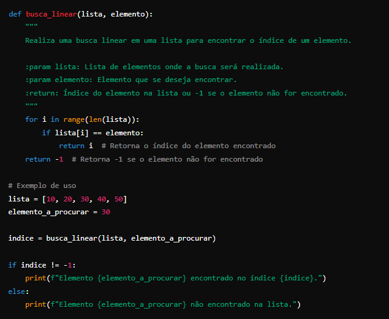
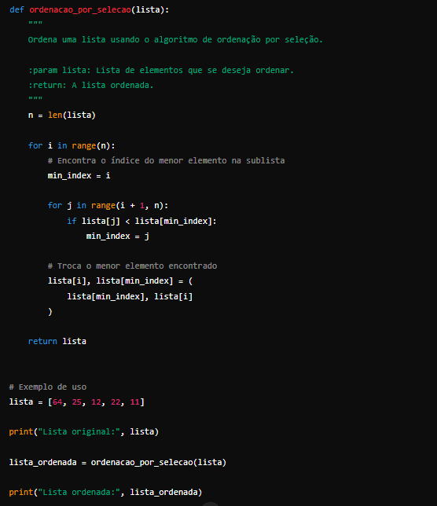

Na seção sobre algoritmos de busca e ordenação, você encontrará explicações simples e exemplos práticos para entender e implementar esses algoritmos em Python. A busca é essencial para localizar elementos em listas ou outras estruturas, enquanto a ordenação organiza os dados para facilitar seu uso.
Busca Linear: Download
A busca linear é o método mais simples para encontrar um item em uma lista. Você começa no primeiro elemento e verifica cada um até encontrar o item desejado ou chegar ao final da lista. É fácil de entender e implementar, mas pode ser lento se a lista for muito longa, já que precisa verificar cada elemento, um por um.
Explicação do algoritimo Video
Ordenação por seleção Download
A ordenação por seleção organiza os dados encontrando o menor elemento na lista e movendo-o para a posição correta, repetidamente, até que toda a lista esteja ordenada. É fácil de entender, mas não é a forma mais rápida de ordenar grandes listas, pois verifica todos os elementos várias vezes.
Explicação do algoritimo Video